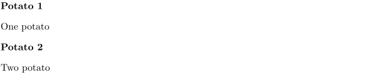
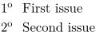

Syntax (autogenerated)
| \setupenumerations[...,...][...=...,...] | |
| [...,...] | name |
| ...=...,... | inherits from \setupenumeration |
Syntax
| \setupenumerations[...,...,...][...,...=...,...] | |
| [...,...,...] | name of an enumeration (defined with \defineenumeration) |
| [...,...=...,...] | see \setupdescriptions |
Description
Set up the appearance and behaviour of an enumeration. Enumeration environments are actually special description environments, so the keys are described at \setupdescriptions.
Example
-
\defineenumeration[Potato] \Potato One potato \setupenumerations[Potato][location=left] % In mkiv one would use `alternative=left`. \Potato Two potato
This gives:
- 
The before and after keys control the spacing around enumerations. It you want to achieve something similar to the itemize-option "packed" then use: (MKIV example)
-
\defineenumeration[Packed] \setupenumerations [Packed] [text=, headstyle=normal, alternative=left, distance=0pt, width=13pt, stopper=\high{o}, before={\blank[small]}, after={\blank[small]}, inbetween=] \Packed First issue \Packed Second issue
This gives:
- 
See also
- \defineenumeration for creating new kinds of numbered objects.
- \setupenumerations for setting up looks and behaviour.
- \enumeration for single-paragraph numbered objects.
- \startenumeration for multiple-paragraph numbered objects.
Help from ConTeXt-Mailinglist/Forum
All issues with: